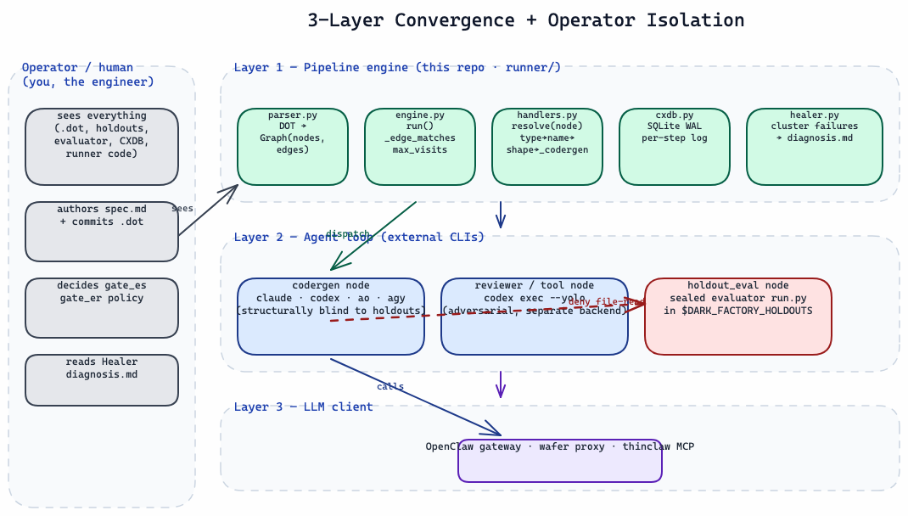
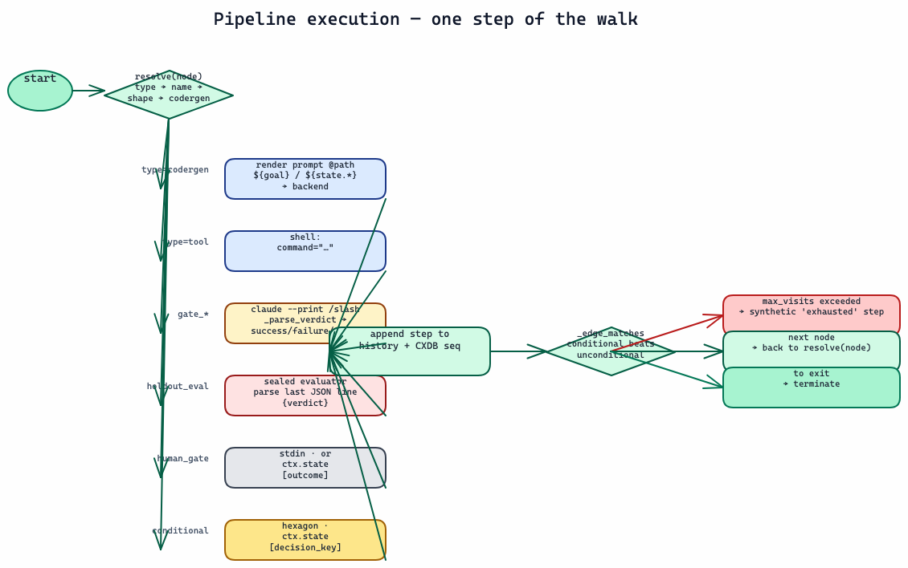
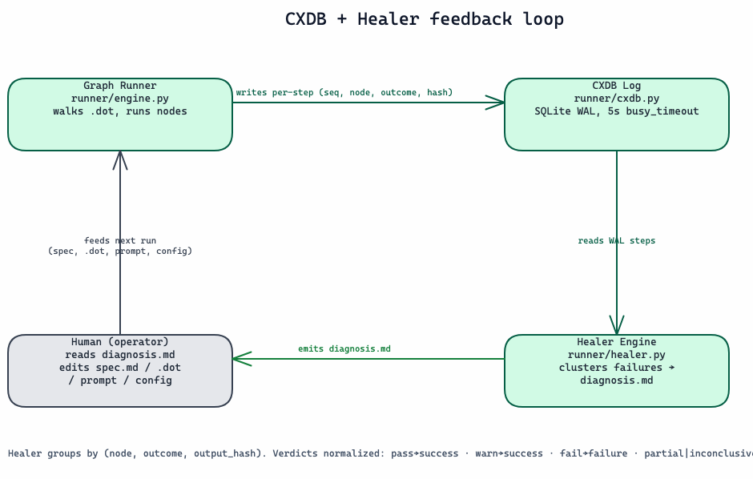

🏭 Dark Factory — Attractor-Pattern DOT Pipeline Runner
  
{kind=link}
{kind=link}
{kind=link}
> 📖 A prettier, diagram-rich HTML version of this README is available at > README.html. The diagrams follow the shared color > semantics documented in > docs/diagram-color-semantics.md — every > color carries meaning (engine teal, agent blue, LLM purple, gate amber, > holdout red, human slate).
A state-of-the-art Python implementation of the Attractor pattern: a robust, DOT-based pipeline engine designed to orchestrate complex multi-agent software engineering workflows using directed graphs. By shifting the unit of durability from ephemeral agent logs to version-controlled process graphs (.dot), Dark Factory enables fully autonomous, lights-out development pipelines.
📋 Executive Summary
Dark Factory turns a natural-language spec into reviewed, tested code — with no human reading the diff. It is an implementation of the Attractor pattern where the durable artifact is a version-controlled process graph (.dot), not an agent transcript. Work flows through two phases:
flowchart LR
subgraph P1["Phase 1 · Spec generation"]
direction TB
INTENT["intent / requirements"] --> SPEC["spec.md<br/>natural-language spec"]
SPEC --> SREV["spec review (optional)<br/>review_slim / review_full.dot"]
end
subgraph P2["Phase 2 · Factory execution"]
direction TB
PLAN["plan"] --> IMPL["implement"] --> TEST["test"] --> REV["adversarial review<br/>(independent backend)"] --> GATE["gates / sealed holdout"]
end
SREV --> PLAN
GATE --> OUT[("CXDB log + Healer diagnosis")]
1. Spec generation — the scarce artifact. You author a detailed spec.md (under specs/ or benchmarks/<project>/) — or let the pipeline's plan node generate it from your --goal. Make it complete enough that a coding agent can build with no hidden product requirements. Optionally validate it first with the spec-review pipeline before spending build tokens. 2. Factory execution — agents build, agents review. dark-factory walks a .dot graph sized to the project: plan → implement → test → adversarial review → gates / sealed holdout, looping through fix on failure. Every node visit is recorded to an SQLite event log (CXDB); the Healer clusters failures into an actionable diagnosis.
Why it's different. Merge confidence comes from outcome artifacts — sealed holdouts, adversarial cross-review, CXDB history — not from a human reading the diff. The implementing agent is structurally blind to the holdouts and evaluator (isolation rule), so it cannot pass tests by reading them. You version the .dot graph and the specs/holdouts/scoring contracts; the Python under runner/ is disposable dorodango — polish, discard, rebuild from spec.
| | | |---|---| | Two phases | spec generation → factory execution | | Runtime | Python 3.13 (uv-managed) | | Entry point | dark-factory binary (not python -m runner) | | Backends | ao (default), minimax (MiniMax-M3 via Claude transport --bare), explicit claude, codex, agy, mock_llm/echo | | Durable artifacts | .dot pipeline graphs + spec.md (process + intent) | | Observability | CXDB SQLite event log + df-healer failure clustering |
📑 Table of Contents
1. Executive Summary 2. Quick Start 3. Example Projects at a Glance 4. The Operator-Agent Isolation Rule 5. Architecture: 3-Layer Convergence 6. How Dark Factory works 7. State-of-the-Art Execution Backends 8. Pipeline Catalog 9. Fail-Closed Observability: CXDB + Healer 10. Directory Layout 11. Recommended default: Agent Orchestrator (AO) with Antigravity 12. Execution Cookbook 13. Sources & References
⚡ Quick Start
Dark Factory runs in two phases — generate the spec, then execute the factory.
# 0. Install once (uv-managed Python 3.13 venv + binaries on PATH)
git clone https://github.com/jleechanorg/dark-factory ~/projects/dark-factory
cd ~/projects/dark-factory && ./install.sh
export DARK_FACTORY_HOME=~/projects/dark-factory
export DARK_FACTORY_HOLDOUTS=~/projects/dark-factory-holdouts
export PATH="$HOME/.local/bin:$PATH"
# Smoke test the install — echo backend, no LLM cost
dark-factory --pipeline pipelines/factory/hello.dot --goal "smoke test" --backend echo
Phase 1 — generate (or author) the spec. Write a complete natural-language spec the coding agent can build from with no hidden requirements. Either commit it to specs/<feature>.md, or let the pipeline's plan node generate spec.md from your --goal. Optionally validate it before spending build tokens:
dark-factory \
--pipeline benchmarks/attractor-spec-review/pipelines/review_slim.dot \
--goal "Review specs/my_feature.md for completeness and ambiguity" \
--backend ao --ao-agent antigravity
Phase 2 — run the factory. Pick the .dot sized to the project (see Example Projects), run from the target repo cwd, and record outcomes to CXDB:
cd ~/projects/my-app
dark-factory \
--pipeline pipelines/slim/minimal_feature.dot \
--goal "Implement specs/my_feature.md" \
--backend ao --ao-agent antigravity \
--feature my_feature \
--cxdb ~/.dark-factory/cxdb.sqlite
# Cluster any failures into a Healer diagnosis
df-healer --cxdb ~/.dark-factory/cxdb.sqlite
> Pick the .dot for the task — do not default every run to one pipeline. See > Example Projects, the Pipeline Catalog, > and the full decision table in docs/pipeline-selection.md.
📦 Example Projects at a Glance
Scale the graph to the project. A one-file utility needs a linear plan→build→score lane; a full-stack app needs staged build nodes, multiple gates, an independent reviewer, and a sealed holdout. All three examples below ship in benchmarks/ as concrete, runnable projects — each driven by its own committed spec (benchmarks/<project>/spec.md) and .dot graph.
| Scale | Example project | Pipeline(s) | Shape | |-------|-----------------|-------------|-------| | Small | benchmarks/fibonacci — a Fibonacci CLI | pipelines/slim.dot | Linear: plan → implement → public acceptance → sealed score, one fix loop | | Medium | benchmarks/airbnb-clone — 3-sprint app | airbnb-clone.dot (+ sprint-{1,2,3}-.dot) | Three sealed-gated sprints (Data → Backend → Frontend), each with a fix loop | | Large | benchmarks/amazon-clone — full-stack commerce | dark_factory.dot (+ slices_.dot) | Spec-review → architecture → 6 build nodes (mixed backends) → smoke/size → /es+/er → independent review → sealed holdout |
🟢 Small — fibonacci (single algorithm, single spec)
flowchart LR
s([Start]) --> plan[Plan] --> impl[Implement] --> acc{"Public<br/>acceptance"}
acc -- pass --> score{"Sealed<br/>score"}
score -- pass --> e([Exit])
acc -- fail --> fix[Fix]
score -- fail --> fix
fix --> acc
One spec, one build, two checks (a visible acceptance command plus a redacted sealed score). Reach for this shape for scripts, single modules, and pure-logic katas.
🟡 Medium — airbnb-clone (sprinted: Data → Backend → Frontend)
flowchart LR
s([Start]) --> p1
subgraph S1["Sprint 1 · Data"]
direction TB
p1[Plan] --> i1[Implement] --> v1{Verify}
v1 -- fail --> f1[Fix] --> v1
end
subgraph S2["Sprint 2 · Backend"]
direction TB
p2[Plan] --> i2[Implement] --> v2{Verify}
v2 -- fail --> f2[Fix] --> v2
end
subgraph S3["Sprint 3 · Frontend"]
direction TB
p3[Plan] --> i3[Implement] --> v3{Verify}
v3 -- fail --> f3[Fix] --> v3
end
v1 -- pass --> p2
v2 -- pass --> p3
v3 -- pass --> e([Exit])
Each sprint is its own plan→implement→verify loop gated by a sealed holdout evaluator; a sprint must pass before the next begins. Reach for this shape for multi-layer features and apps you want delivered in reviewable increments.
🔴 Large — amazon-clone (full-stack, multi-gate, sliced)
flowchart LR
s([Start]) --> sr["Spec review<br/>codex"] --> arch["Architecture<br/>minimax (Claude transport)"] --> build
subgraph build["Build · specialized codergen nodes (mixed backends)"]
direction TB
dm[Data model] --> be[Backend API] --> fe[Frontend] --> fr[Firestore rules] --> sd[Seed + reset] --> vh[Validation harness]
end
build --> sm[Local smoke] --> sz[Size check] --> es["es gate"] --> er["er gate"] --> ir["Independent review<br/>codex"] --> ho{"Sealed<br/>holdout"}
ho -- pass --> e([Exit])
ho -- fail --> fx[Fix] --> sm
A built-in spec_review node opens the run; specialized build nodes split backend (codex) from the MiniMax-M3 lane when selected (Claude transport in --bare mode); evidence gates (/es, /er), an independent adversarial reviewer, and a sealed holdout all guard the exit. A direct Claude backend is an explicit opt-in and requires a validated DARK_FACTORY_CLAUDE_CONFIG_DIR. The same project also ships vertical-slice graphs (slices_foundation → catalog → cart → checkout) when you'd rather ship one feature column end-to-end at a time. Reach for this shape for production full-stack work.
🔒 The Operator-Agent Isolation Rule
To guarantee rigorous evaluation integrity, Dark Factory strictly enforces sandboxed agent execution:
> [!IMPORTANT] > Adversarial Separation Constraint: The spawned implementing agent (the codergen worker running Claude Code, Codex, or an Antigravity session) is completely blind to holdout test suites (holdouts/, runner/evaluator.py, and _holdout/ paths). > > Operational Enforcement: The runner CLI dynamically invokes the implementing agent under sandbox-exec with strict OS-level permissions denying read access to the local holdouts directory. > Environment Isolation: All environment variables pointing to holdout files (DARK_FACTORY_HOLDOUTS, etc.) are actively stripped from the agent subprocess env via _sanitized_env(). > > As the Operator, you have full access to view tests, event logs, and holdouts. You must ensure that no holdout-derived hints or test code leaks into the prompt templates consumed by the coder nodes.
📐 Architecture: 3-Layer Convergence
Dark Factory operates as the top layer of a modern, modular agentic stack:

🧭 How Dark Factory works
System architecture (three-layer convergence + isolation + CXDB/Healer)
The durable artifact is the .dot graph — version it, review it in PRs, and treat the Python under runner/ as disposable dorodango (polish, discard, rebuild from spec). The isolation guarantee is structural: the implementing/codergen agent only ever sees the spec, prompts, and its own worktree — never holdouts/ or the sealed evaluator, which are enforced via sandbox-exec file-read denial plus a sanitized subprocess env. Every node visit is written to the CXDB SQLite event log, and the Healer reads that log to cluster terminal failures into an actionable diagnosis.md — learning accumulates in the event log, not in the runner code.
Pipeline execution flow (one step of the walk)

engine.run() walks from start, calls the handler that resolve(node) picks (type= → start/exit name → DOT shape → default _codergen), records the step to history and the CXDB sequence, then chooses the next edge with _edge_matches — conditional edges (condition="key=value" / key!=value) always win over unconditional ones. A node's max_visits bounds loops: exceeding it emits a synthetic exhausted step and routes to exit. Gate verdicts are normalized to success/failure/error so the Healer can cluster real failures separately from infra crashes; holdout_eval reads the last JSON line of the sealed evaluator's stdout.
🚀 State-of-the-Art Execution Backends
Dark Factory ships with first-class support for diverse LLM and agent backends, dynamically selected per node via DOT attributes or global flags:
1. agy (Antigravity CLI Backend) [New & Recommended]
- Invokes the powerful Antigravity execution engine headlessly and non-interactively using:
``bash agy --add-dir <cwd> --dangerously-skip-permissions --print --print-timeout <s_s> ``
- Wraps prompts automatically in a headless instruction wrapper, directing Antigravity to decompose the task, spawn parallel internal subagents if useful, apply direct workspace changes, and exit cleanly without waiting for interactive input.
2. minimax (MiniMax-M3 via Claude transport)
- The
minimaxbackend uses the Claude transport in--baremode, pinned to MiniMax-M3 and its explicit provider credentials.
3. claude (Claude Code CLI, explicit opt-in)
- Directly invokes Claude only when an operator selects this lane and provides a validated
DARK_FACTORY_CLAUDE_CONFIG_DIR; it never inherits the personal host Claude profile by default.
4. codex (Codex CLI)
- Uses
codex execto drive immediate terminal or workspace updates.
5. ao (WorldArchitect Agent)
- Spawns an autonomous workspace worker mapped to an active WorldArchitect project (
--ao-project).
6. mock_llm / echo
- Deterministic test backends used for validation, smoke testing, and continuous integration pipelines.
📊 Pipeline Catalog
Our pipelines are designed to support a wide range of complexity, from simple test lanes to full-scale multi-stage development pipelines:
1. The Gates Pipeline (pipelines/factory/gates.dot)
An end-to-end multi-agent pipeline:
- Specify: Parses natural language specs and generates target code designs.
- Implement: Translates designs into physical code modifications.
- Gate Verification: Executes deterministic compiler checks and runs static reviews.
- Holdout Evaluation: Runs sealed verification suites to evaluate performance.
2. Minimal Feature & Style Sheets (pipelines/slim/minimal_feature.dot)
- Demonstrates Dark Factory's support for CSS-like model stylesheets (
.model.css). - Rather than cluttering every node with explicit models or API parameters, the runner applies custom routing rules dynamically at runtime based on selectors (e.g., matching node names, shapes, or types to specific model profiles).
3. Spec Review Benchmark (benchmarks/attractor-spec-review/)
Designed to evaluate and refine natural-language specs:
review_slim.dot: Rapid, single-pass specification audit and smoke check.review_full.dot: In-depth spec review featuring multi-stage auditing, full-stack smoke environments, and independent reviewer audits viacodex exec --yolo.
🩺 Fail-Closed Observability: CXDB + Healer
To build a true "Dark Factory," errors must be logged, clustered, and resolved programmatically:

- CXDB SQLite Event Log (
runner/cxdb.py): - Every step, node transition, stdout snippet, stderr traceback, metadata chunk, and execution cost metric is recorded in a centralized SQLite database.
- Runs in high-concurrency Write-Ahead Logging (WAL) mode with a robust
5000msbusy timeout to guarantee concurrent multi-pipeline instances write safely without database locking errors. - The Healer Engine (
runner/healer.py): - Reads the CXDB log and dynamically clusters terminal failures (e.g.,
failure,exhausted,stuck,error) by(node, outcome, output_hash). - When the
minimaxroute is selected, invokes the scoped MiniMax-M3 Claude transport in--baremode; a direct Claude review requires explicit opt-in and validatedDARK_FACTORY_CLAUDE_CONFIG_DIR. - Generates a structured, highly actionable Markdown report containing a tailored prescription (e.g., which prompt to refine, which code logic failed, or which harness configuration is broken) for every cluster.
📁 Directory Layout
dark-factory/
├── pipelines/ # Durable .dot pipeline graph definitions
│ ├── factory/ # Production factory runs (gates.dot, hello.dot)
│ └── slim/ # Minimal templates & styling stylesheets (.model.css)
├── benchmarks/ # Public NLSpecs, starter assets, and benchmarks
│ ├── amazon-clone/ # Full-stack E-Commerce benchmark setup
│ ├── airbnb-clone/ # Firebase emulator-backed benchmark
│ └── attractor-spec-review/ # Spec review pipelines (review_slim/full.dot)
├── specs/ # System feature specs (visible to implementing agents)
├── prompts/ # System-wide prompt templates referenced by DOT nodes
├── runner/ # The Python DOT Pipeline Engine
│ ├── __init__.py
│ ├── __main__.py # Command line interface & parser arguments
│ ├── parser.py # PyDot loader & validator (verifies start/exit)
│ ├── engine.py # Graph traversal, state tracking, & loop limits
│ ├── handlers.py # Core handlers & backends (agy, minimax, claude, codex, ao)
│ ├── cxdb.py # SQLite WAL step recording and logging schemas
│ └── healer.py # Failure clustering & automatic prescription engine
├── tests/ # Rigorous unit and integration test suite
├── CLAUDE.md # Agent instructions (auto-loaded by Claude Code)
├── AGENTS.md # Identical instructions for all other AI agents
└── README.md # This premium documentation
⭐ Recommended default: Agent Orchestrator (AO) with Antigravity
For day-to-day work, the factory runs with the --backend ao default (configured to use the --ao-agent antigravity plugin to route headlessly through the Antigravity CLI; any Claude Code agent is an explicit opt-in lane with validated account scope). Pick the .dot for the task — do not default every run to a single pipeline. The full decision table is docs/pipeline-selection.md; the common picks:
| Task | Pipeline | |------|----------| | Smoke / wiring (no LLM cost) | pipelines/factory/hello.dot | | New feature (full loop) | pipelines/slim/minimal_feature.dot | | In-flight PR iteration | pipelines/slim/minimal_pr.dot | | Diff + sealed holdout validation | pipelines/factory/gates.dot |
Operating discipline:
- Always record outcomes. Pass
--cxdb ~/.dark-factory/cxdb.sqliteand
--feature <name> on every real run, then run df-healer --cxdb ~/.dark-factory/cxdb.sqlite afterward to cluster failures into a diagnosis. Merge confidence comes from outcome artifacts (holdouts, gates, CXDB history), not from reading the diff.
- Keep adversarial cross-review independent. Every non-trivial pipeline should
contain at least one reviewer node that is separate from the coder agent — e.g. an independent reviewer tool node invoking codex exec --yolo. Because that reviewer never saw the implementation prompt, its verdict is genuinely adversarial. The slim pipelines (minimal_feature.dot, minimal_pr.dot) now ship this by default: their review node pins backend="codex", so the reviewer runs on a different backend than the coder out of the box (precedence: explicit node attr > model_stylesheet > --backend, so this is independent and non-overridable by the coder's --backend). Requires codex installed; override path is in docs/pipeline-selection.md.
- Adversarial-review priority queue:
codex > minimax > agy(set
DARK_FACTORY_ADVERSARIAL_PRIORITY env var to override). The queue is the first adversarial pass — chosen at run-config time, not a retry cascade. A real fail|partial from the chosen reviewer is authoritative and is never retried on a different model (no-reviewer-shopping rule). Use backend_priority=... and prefer_adversarial: true on gate_er / gate_es nodes; the resolver audit lands in the gate's Result.metadata (priority list, resolved name, skipped entries).
- Route models by role, not by hand. Use a heavier model for plan/review and a
faster one for implement. Set this per-node (backend="…" / model="…") or, better, once per graph via model_stylesheet="….model.css" — never by editing every node.
- Author dynamically, run statically. The engine executes static
.dotgraphs
only; any "dynamic / NL-generated workflow" advantage lives at authoring time, not runtime (benchmarks show execution dispatch is a wash, ~5–9% slower for the dynamic harness). The one structural exception is runtime-determined fan-out. Full decision guide: docs/dynamic-vs-deterministic-workflow.md.
Concrete copy-paste (gated run with sealed holdout, from the target repo cwd):
cd ~/projects/my-app
dark-factory \
--pipeline pipelines/factory/gates.dot \
--goal "<feature description>" \
--backend ao --ao-agent antigravity \
--feature <feature_name> \
--cxdb ~/.dark-factory/cxdb.sqlite
# After the run, cluster any failures into a Healer diagnosis:
df-healer --cxdb ~/.dark-factory/cxdb.sqlite
🍳 Execution Cookbook
⚙️ One-time install (binary, not source)
Dark Factory runs via the dark-factory binary — not python -m runner from a raw checkout. Install once with uv:
git clone https://github.com/jleechanorg/dark-factory ~/projects/dark-factory
cd ~/projects/dark-factory
./install.sh
export DARK_FACTORY_HOME=~/projects/dark-factory
export DARK_FACTORY_HOLDOUTS=~/projects/dark-factory-holdouts
export PATH="$HOME/.local/bin:$PATH"
This installs a uv-managed Python 3.13 venv, PyPI deps (pydot, PyYAML), and symlinks dark-factory + df-healer into ~/.local/bin.
Run pipelines from the target repo (implementation workdir = cwd). Graphs and prompts load from $DARK_FACTORY_HOME. See docs/pipeline-selection.md — pick the .dot for the task, do not always use the same default.
💨 1. Smoke pipeline (no LLM cost)
cd ~/projects/dark-factory # or any repo; hello resolves via DARK_FACTORY_HOME
dark-factory --pipeline pipelines/factory/hello.dot --goal "smoke test" --backend echo
🆕 2. New feature (full loop)
cd ~/projects/my-app
dark-factory \
--pipeline pipelines/slim/minimal_feature.dot \
--goal "Add user-facing feature X" \
--backend ao --ao-agent antigravity \
--feature my_feature \
--cxdb ~/.dark-factory/cxdb.sqlite
🔁 3. In-flight PR iteration (research + holdout)
cd ~/projects/my-app
dark-factory \
--pipeline pipelines/slim/minimal_pr.dot \
--goal "Fix failing tests on PR branch" \
--backend ao --ao-agent antigravity \
--feature my_feature \
--state 'slim.test_command=pytest tests/test_foo.py -v' \
--cxdb ~/.dark-factory/cxdb.sqlite
🛡️ 4. Gates-only validation (diff already implemented)
cd ~/projects/my-app
dark-factory \
--pipeline pipelines/factory/gates.dot \
--goal "Validate JWT middleware diff" \
--backend ao --ao-agent antigravity \
--feature auth_middleware \
--cxdb ~/.dark-factory/cxdb.sqlite
🩺 5. Healer failure audit
df-healer --cxdb ~/.dark-factory/cxdb.sqlite
🧪 Tests (dev)
cd ~/projects/dark-factory
.venv/bin/python -m pytest tests/
📚 Sources & References
Dark Factory stands on the shoulders of groundbreaking work in agentic software engineering and Level 5 automation. Our design, paradigms, and benchmark splits are inspired by the following research, reference implementations, and articles:
🔬 Core Specifications & Benchmarks
- StrongDM, AttractorBench — GitHub Repository
- Defines the benchmark paradigm: Agents ingest a public natural-language specification, while the deterministic evaluation and test suites are held out locally to prevent LLM training-data contamination.
- jleechanorg, AttractorBench Fork — GitHub Repository
- Our public experimental baseline: Sandbox for validating spec-review workflows and cross-repository agent validation mechanics.
📝 Paradigms & Articles
- Dan Shapiro, "You don't write the code" — Blog Post
- The philosophy of Level 5 Automation: In the ultimate "Dark Factory," humans never read or write code. Instead, they specify intent and design outcomes. Quality is enforced via observability, automated healers, and adversarial reviews.
- Simon Willison, "The Software Factory" — Blog Post
- The Industrialization of AI Coding: Shifting the industry mindset from bespoke chat boxes to repeatable, high-volume automated pipeline execution.
- 2389 Research, "The Dark Factory is a .dot file" — Blog Post
- The Durable Artifact Principle: While the pipeline runner code itself is disposable (dorodango — polished, discarded, and rebuilt), the pipeline
.dotfile remains the precious, versioned representation of the software engineering process.
🛠️ Reference Implementations
- StrongDM, Attractor — GitHub Repository
- The original reference harness establishing the foundational Attractor paradigms.
- Dan Shapiro, Kilroy — GitHub Repository
- A pioneering implementation of the Attractor loop.
- 2389 Research, Smasher — GitHub Repository
- An adversarial reviewer and compiler-checked coding harness.
- 2389 Research, Mammoth — GitHub Repository
- An LLM orchestration and workspace synchronization harness.
- 2389 Research, Tracker — GitHub Repository
- A high-performance pipeline and task state tracker.
- 2389 Research, dippin-lang — GitHub Repository
- A domain-specific language designed for expressing declarative dataflow pipelines.
🎯 Advanced Techniques & Methodologies
- StrongDM, Techniques — Techniques Directory
- A curated catalog of tactical strategies for robust agentic execution.
- StrongDM Techniques, Direct-to-Unit (DTU) — DTU Documentation
- The DTU Pattern: Bypassing middle layers to directly generate targeted unit tests and implementation assertions, ensuring immediate execution feedback.
“The pipeline definitions encode the development process itself. Rebuild the code, polish the dorodango, but keep the graph.”